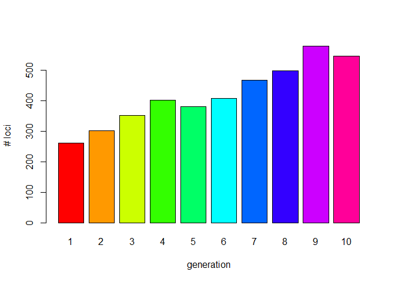
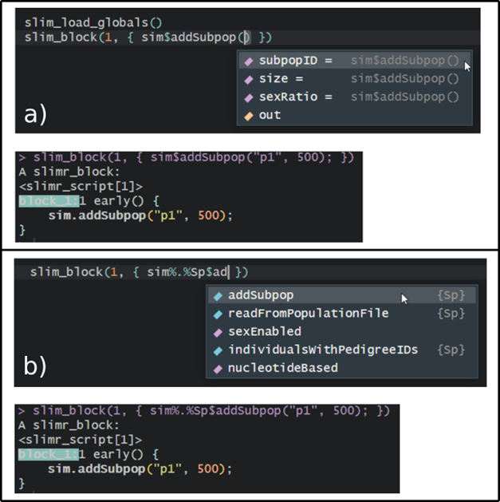

https://rdinnager.github.io/slimr/
The goal of slimr is to run SLiM population genetics forward simulations from R. It also has utilities for monitoring the simulations, and bringing the resulting data into R for post-processing and visualization.
Setup
To be able to use slimr productively it is important to have a working version of SLiM and slimr.
Installing slimr and SLiM
As a first step you need to install the package slimr from github.
if (!require("devtools")) install.packages(devtools)
devtools::install_github("rdinnager/slimr") #downloads the latest version
#for other branches you may want to try
devtools::install_github("rdinnager/slimr", re = "v0.2.1") #version accompanied with the manuscriptslimr is also on R-Universe, and can be installed alternatively using the following code:
install.packages('slimr', repos = c('https://rdinnager.r-universe.dev', 'https://cloud.r-project.org'))To facilitate the installation of slim We provide provide a function slim_setup(). This functions aims to download a precompiled binary of SLiM and automatically links slimr to SLiM. Unfortunately due to the variety of systems and installs this might not work. If that is is the case please follow the excellent documentation how to install SLiM on their websites.
A first test run
The next step is to make sure slimr is “linked” to slim (by knowing the location of the folder where the slim program is installed.). To check you can try:
slimr::slim_is_avail()
#> [1] TRUEAnd if true is returned you are ready to go and run the test example below. In the case the test was not successful we need to find the folder where the slim executable has been installed and set this path in the R environment accordingly.
For example if SLiM is installed at C:/Program Files/R/R-4.3.1/library/slimr then you need to specify this via:
Sys.setenv(SLIM_HOME='C:/Program Files/R/R-4.3.1/library/slimr')If you want to add this path permanently to your Rstudio installation (so no need to run Sys.setenv() every time) you can use the command usethis::edit_r_environ() and add a line like SLIMR_HOME='C:/Program Files/R/R-4.3.1/library/slimr' to this file.
Run a first simple test
To be able to run SLiM within slimr we need to create a simple slim script. Below is the slimr version of the first slim script as presented in the excellent SLiM manual, called receipes. There are hundreds of more advanced script and we provide also several worked out examples in the manuscript (Russell et al. submitted, bioRxiv ). The example below is simply to test if slim is installed correctly and works together with slimr.
Running this code should give you the output as below (a return value of zero means success).
library(slimr)
#> Welcome to the slimr package for forward population genetics simulation in SLiM. For more information on SLiM please visit https://messerlab.org/slim/ .
#>
#> Attaching package: 'slimr'
#> The following object is masked from 'package:methods':
#>
#> initialize
#> The following object is masked from 'package:base':
#>
#> interaction
slim_script(
slim_block(initialize(),
{
## set the overall mutation rate
initializeMutationRate(1e-7);
## m1 mutation type: neutral
initializeMutationType("m1", 0.5, "f", 0.0);
## g1 genomic element type: uses m1 for all mutations
initializeGenomicElementType("g1", m1, 1.0);
## uniform chromosome of length 100 kb
initializeGenomicElement(g1, 0, 99999);
## uniform recombination along the chromosome
initializeRecombinationRate(1e-8);
}),
slim_block(1,
{
sim.addSubpop("p1", 500);
}),
slim_block(10000,
{
sim.simulationFinished();
})
) -> script_1
script_1
#> <slimr_script[3]>
#> block_init:initialize() {
#> initializeMutationRate(1e-07);
#> initializeMutationType("m1", 0.5, "f", 0);
#> initializeGenomicElementType("g1", m1, 1);
#> initializeGenomicElement(g1, 0, 99999);
#> initializeRecombinationRate(1e-08);
#> }
#>
#> block_2:1 early() {
#> sim.addSubpop("p1", 500);
#> }
#>
#> block_3:10000 early() {
#> sim.simulationFinished();
#> }
#run slim from within slimr
slim_run(script_1)
#>
#>
#> Simulation finished with exit status: 0
#>
#> Success!slimr shines because it can create so called templates to run scripts with different parameter settings. It also allows to “collect” the output from SLiM and load it back into R, so you can run a full simulation with lots of parameters settings using parallel cores if available and analyse the output directly in R.
See the vignettes for details of these features and how to use them.
A complete workflow
Below is a simple “complete” workflow. * Creating a script in R * Run SLiM * Load the results into R * Analyse and visualise the results.
As an example we simply will run a single population of 33 individuals for 100 generations, with a single chromosome of (length=100000 bases), and high mutation rate (1e-5) [to shorten run-time]. Every 10 generation we will save the genetic status of each individual for 100 generations. Once completed we read back in the genotypes (as a genlight object) and count the number of loci every of the 10 generations (the number of loci increases due to the mutations, that occurs during the simulation.
library(slimr)
# package adegenet as we are using genlight objects
if (!require(adegenet)) install.packages("adegenet")
#> Loading required package: adegenet
#> Loading required package: ade4
#>
#> /// adegenet 2.1.10 is loaded ////////////
#>
#> > overview: '?adegenet'
#> > tutorials/doc/questions: 'adegenetWeb()'
#> > bug reports/feature requests: adegenetIssues()
library(adegenet)
slim_script(
slim_block (initialize(),
{
initializeMutationRate(1e-5);
## m1 mutation type: neutral
initializeMutationType("m1", 0.5, "f", 0.0);
## g1 genomic element type: uses m1 for all mutations
initializeGenomicElementType("g1", m1, 1.0);
## uniform chromosome of length 100 kb
initializeGenomicElement(g1, 0, 99999 );
## uniform recombination along the chromosome
initializeRecombinationRate(1e-8);
}),
slim_block(1, early(),
{
## create a population of 33 individuals
sim.addSubpop("p1", 33);
}),
slim_block(1, 100, late(),
{
#create an output
slimr_output(p1.genomes.output(), "p1", do_every=10);
}),
slim_block(100,late(),
{
sim.simulationFinished();
})
)->script_2As before we setup a script, but this time we would like to run SLiM in parallel (does not make much sense as it is a single run only, but this is for demonstration purposes)
library(future)
# we want to run SLiM using 5 local cores
# please note on Linux and Windows you would like to use multicore as this is faster as it is a 'real' fork,
# but multisession works on all systems
plan(multisession, workers = 5)
sr <- slim_run(script_2 , parallel = TRUE)
#>
#>
#> Simulation finished with exit status: 0
#>
#> Success!And finally we want to get the results back into R. The sr object has information on all the runs and output files and data and can be used to get the results directly back into R. Please note that SLiM will still produce all the output files it as if it would have been run from the command line, hence the user can also explore those files.
In a typical slimr workflow though the user wants to have the data loaded back into R and depending on the output (in this case we used the function genomes.output() to save) we can easily create genlight objects that hold the genomics data in a very memory efficient way. To do so we use the slim_extract_genlight function.
Before we use this function we may want to explore the sr object which is a tibble that holds all the information that was used during runs.
str(sr)
#> List of 6
#> $ output : chr [1:42] "// Initial random seed:" "524845972" "" "// RunInitializeCallbacks():" ...
#> $ exit_status: int 0
#> $ output_data: slmr_tp_ [10 × 5] (S3: slimr_output_data/spec_tbl_df/tbl_df/tbl/data.frame)
#> ..$ generation: int [1:10] 10 20 30 40 50 60 70 80 90 100
#> ..$ name : chr [1:10] "p1" "p1" "p1" "p1" ...
#> ..$ expression: chr [1:10] "p1.genomes.output()" "p1.genomes.output()" "p1.genomes.output()" "p1.genomes.output()" ...
#> ..$ type : chr [1:10] "slim_output" "slim_output" "slim_output" "slim_output" ...
#> ..$ data : chr [1:10] "#OUT: 10 GS 66\nMutations:\n60 3 m1 91517 0 0.5 p1 1 3\n156 8 m1 42112 0 0.5 p1 1 6\n140 18 m1 58247 0 0.5 p1 1"| __truncated__ "#OUT: 20 GS 66\nMutations:\n43 8 m1 42112 0 0.5 p1 1 12\n219 18 m1 58247 0 0.5 p1 1 2\n13 32 m1 49150 0 0.5 p1 "| __truncated__ "#OUT: 30 GS 66\nMutations:\n171 8 m1 42112 0 0.5 p1 1 8\n19 32 m1 49150 0 0.5 p1 1 18\n21 33 m1 60590 0 0.5 p1 "| __truncated__ "#OUT: 40 GS 66\nMutations:\n171 8 m1 42112 0 0.5 p1 1 12\n60 32 m1 49150 0 0.5 p1 1 12\n63 33 m1 60590 0 0.5 p1"| __truncated__ ...
#> ..- attr(*, "spec")=
#> .. .. cols(
#> .. .. generation = col_integer(),
#> .. .. name = col_character(),
#> .. .. expression = col_character(),
#> .. .. type = col_character(),
#> .. .. data = col_character()
#> .. .. )
#> ..- attr(*, "problems")=<externalptr>
#> $ process :Classes 'process', 'R6' PROCESS 'slim.exe', finished.
#>
#> $ error : chr(0)
#> $ output_file: chr "F:\\Rtemp\\RtmpgbqoPJ\\file5fc41a19ddf.txt"
#> - attr(*, "class")= chr "slimr_results"
sr$output_data
#> # A tibble: 10 × 5
#> generation name expression type data
#> <int> <chr> <chr> <chr> <chr>
#> 1 10 p1 p1.genomes.output() slim_output "#OUT: 10 GS 66\nMutations:…
#> 2 20 p1 p1.genomes.output() slim_output "#OUT: 20 GS 66\nMutations:…
#> 3 30 p1 p1.genomes.output() slim_output "#OUT: 30 GS 66\nMutations:…
#> 4 40 p1 p1.genomes.output() slim_output "#OUT: 40 GS 66\nMutations:…
#> 5 50 p1 p1.genomes.output() slim_output "#OUT: 50 GS 66\nMutations:…
#> 6 60 p1 p1.genomes.output() slim_output "#OUT: 60 GS 66\nMutations:…
#> 7 70 p1 p1.genomes.output() slim_output "#OUT: 70 GS 66\nMutations:…
#> 8 80 p1 p1.genomes.output() slim_output "#OUT: 80 GS 66\nMutations:…
#> 9 90 p1 p1.genomes.output() slim_output "#OUT: 90 GS 66\nMutations:…
#> 10 100 p1 p1.genomes.output() slim_output "#OUT: 100 GS 66\nMutations…Now we can use the slim_extract_genlight function to convert the SLiM output files back into R, which creates a list of 10 genlight objects, one for each generation.
gls<- slim_extract_genlight(sr, by=c("generation"))
gls
#> # A tibble: 10 × 2
#> generation genlight
#> <int> <list>
#> 1 10 <genlight[,265]>
#> 2 20 <genlight[,305]>
#> 3 30 <genlight[,399]>
#> 4 40 <genlight[,437]>
#> 5 50 <genlight[,450]>
#> 6 60 <genlight[,565]>
#> 7 70 <genlight[,577]>
#> 8 80 <genlight[,531]>
#> 9 90 <genlight[,603]>
#> 10 100 <genlight[,553]>
#the genlight object for generation 10
gls$genlight[[1]]
#> /// GENLIGHT OBJECT /////////
#>
#> // 33 genotypes, 265 binary SNPs, size: 73.3 Kb
#> 0 (0 %) missing data
#>
#> // Basic content
#> @gen: list of 33 SNPbin
#>
#> // Optional content
#> @ind.names: 33 individual labels
#> @loc.names: 265 locus labels
#> @position: integer storing positions of the SNPs
#> @other: a list containing: mut_type prevalence
#number of loci at generation 10
nLoc(gls$genlight[[1]])
#> [1] 265And finally we can use a simply lapply to find the number of loci in the genlight for each generation (e.g. the number of loci that are polymorphic).
nloci <- unlist(lapply(gls$genlight, nLoc))
barplot(nloci, col=rainbow(length(gls$genlight)), names.arg = 1:10, xlab="generation",
ylab="# loci")
As we expect, this value gradually increases over time.
Within a simulation, it is also possible to output any file format or intermediate result in a variety of common and self-defined formats, (e.g VCF files, Fst values or a pedigree trees) and then extract the information using the workflow outlined above.
A very important feature, not shown here, is that you can create so called template scripts that have placeholders for parameters, that can be filled via a R data structure and all run all simuations via a single call to SLiM using slim_run(). Please see the vignettes for such an example.
We believe that a simplified workflow will allow researchers to explore their parameter space in more detail and therefore, ultimately, will lead to a better understanding of the system under study.
Have fun using slimr!!!
Russell et al.
(Thanks to Bernd Gruber for making the above example script!)
Code of Conduct
Please note that the slimr project is released with a Contributor Code of Conduct. By contributing to this project, you agree to abide by its terms.
A Note on Autocomplete
Autocomplete is supported for SLiM code used within slimr, though with some unavoidable limitations. More specifically, autocomplete is normally limited to the suggestions of the names of existing functions and arguments. This creates a complication for functions that are methods within SLiM classes (the majority of functions since SLiM is an object-oriented language). This is because the operator to access elements inside an object in SLiM is . (similar to Python), but in R . is not an operator, R assumes the . is part of the name of an object. This means if you type sim.addSubpop, R will not recognize addSubpop as a function to look up for autocompletion.
In slimr, there are two ways you can get around this limitation for accessing autocomplete for methods from within R. The simplest way that results in the most readable code is to use the slim_load_globals() function. When run this function will load object stubs for commonly used SLiM class instances into the R global environment. This includes the sim object, which is the main SLiMSim class instance used to track the simulation from within SLiM (or an instance of class Species in SLiM 4.0 or greater, where it represents the main species simulation in a single species simulation). It can also load as many numbered global variables used in SLiM as desired, named as in SLiM like p1, p2, …, pn for the first n Subpopulations, g1, g2, …, gn for GenomicElementTypes, etc (see documentation of slim_load_globals() for details). Functions (or properties) can then be accessed within these instances using the standard R $ operator for accessing elements of a list. For convenience, slimr converts any $ in SLiM code into ., allowing you to leave the code as is after autocompletion has been used.
The second method is less readable but avoids having to load otherwise unnecessary objects into your global environment. To use it, you type the object name followed by the R operator %.%, which is included in slimr, they then type the class name of the object (such as Genome, or SLiMSiM) and then using the $ operator, methods and properties of that class can be accessed and autocompleted. An example would be sim%.%Species$addSubpop(). This is a little verbose so slimr also includes abbreviated versions of all SLiM classes. For Species the abbreviation is Sp, so you could type sim%.%Sp$addSubpop(). Just as for the other solution, slimr knows how to properly replace the above code with the correct SLiM code, which would be sim.addSubpop(). See the below figure for a screenshot of both the methods in action in the RStudio IDE.

Caption: Screenshots of working with slimr autocomplete in RStudio, which requires some special consideration due to the object oriented programming style of SLiM. a) An example of autocomplete for SLiM code using the slim_load_globals() function which loads a set of objects that store what SLiM classes contain, in this case the sim object, which is a SLiM 4.0 Species class. This lets the user press tab to bring up the arguments of addSubpop() function, which is a method of Species. The lower panel shows that slimr automatically replaces the expression with the correct SLiM code. b) An example of using the alternative method for autocomplete by typing the name of an object (sim), followed by %.% and then the class name or an abbreviation of the class name (Sp), and then using $ to access methods or properties of the class. Again, the lower panel shows how slimr correctly replaces the construction with valid SLiM code. By prefixing any of the methods or properties inside the slimr class objects with ?, you can also bring up the full documentation of the method or property from the SLiM manual.